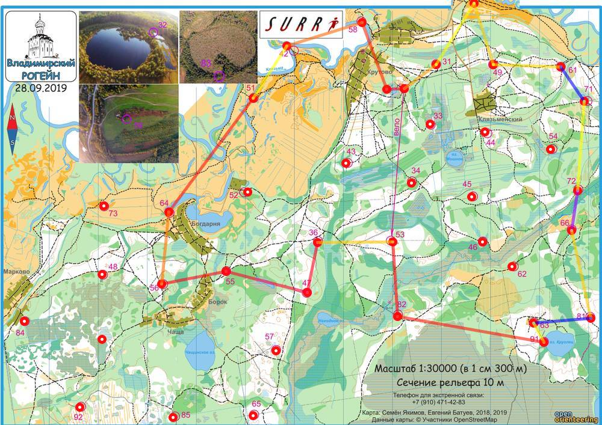

| Команда | Чистый лес |
| Номер | 153 |
| Участники | Антонов Данил, 1981 |
| Группа | м |
| Место | 25 |
| Очки | 114 |
| Штраф | 0 |
| Время | 07:50:05 |
| Результат | 114 |
| КП | Время | Сплит | Расстояние, км | Темп, мин/км |
|---|---|---|---|---|
| С | 12:00:00 | |||
| 31 | 12:09:06 | 00:09:06 | 0.808 | 11.3 |
| 59 | 12:21:23 | 00:12:17 | 1.473 | 8.3 |
| 49 | 12:34:14 | 00:12:51 | 1.309 | 9.8 |
| 61 | 12:47:00 | 00:12:46 | 1.371 | 9.3 |
| 71 | 20:38:15 | 4591:51:15 | 0.844 | >999 |
| 72 | 13:39:16 | -4591:01:01 | 1.819 | <1 |
| 66 | 14:02:10 | 00:22:54 | 0.823 | 27.8 |
| 81 | 14:20:03 | 00:17:53 | 1.815 | 9.9 |
| 63 | 20:38:06 | 4590:18:03 | 1.176 | >999 |
| 91 | 14:51:29 | -4590:13:23 | 0.446 | <1 |
| 82 | 15:38:56 | 00:47:27 | 3.016 | 15.7 |
| 53 | 16:05:01 | 00:26:05 | 1.521 | 17.1 |
| 36 | 16:20:25 | 00:15:24 | 1.534 | 10.0 |
| 47 | 16:41:46 | 00:21:21 | 1.041 | 20.5 |
| 55 | 17:21:26 | 00:39:40 | 1.705 | 23.3 |
| 56 | 17:45:57 | 00:24:31 | 1.325 | 18.5 |
| 64 | 18:04:36 | 00:18:39 | 1.472 | 12.7 |
| 51 | 18:50:13 | 00:45:37 | 2.884 | 15.8 |
| 42 | 19:00:14 | 00:10:01 | 1.268 | 7.9 |
| 58 | 19:21:14 | 00:21:00 | 1.598 | 13.1 |
| 32 | 19:43:27 | 00:22:13 | 1.454 | 15.3 |
| Ф | 19:50:05 | 00:06:38 | 0.346 | 19.2 |
| 07:50:05 | 28.782 км | 16.3 мин/км |
